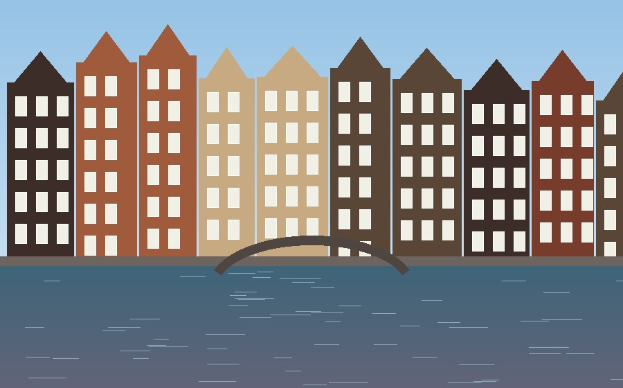

Амстердам

Коротко про місто
Амстердам — столиця Нідерландів і найбільше місто країни. Місто виросло з невеликого рибальського поселення біля дамби на річці Амстел, звідси й назва. Зараз це один з найвідоміших туристичних центрів Європи.
Чому я його обрала
Амстердам мені подобається тим, що тут вода і місто ніби живуть разом. Канали, вузькі високі будиночки, мости з велосипедами і дуже спокійний ритм. Мені цікаво, як таке місто взагалі змогли побудувати на воді.
Цікаві факти
- Пояс каналів XVII століття внесений до списку ЮНЕСКО у 2010 році.
- Загальна довжина каналів міста понад 100 кілометрів, а мостів більше тисячі.
- Велосипедів в Амстердамі більше, ніж мешканців.
- Багато старих будинків стоять на дерев'яних палях, забитих у ґрунт.
Що варто побачити
- Rijksmuseum (Державний музей)
- Музей Ван Гога
- Будинок Анни Франк
- Площа Дам і Королівський палац
- Вондельпарк
Моя оцінка
9 з 10. Дуже красиво, але дорого і багато туристів.
Більше інформації: Амстердам у Вікіпедії